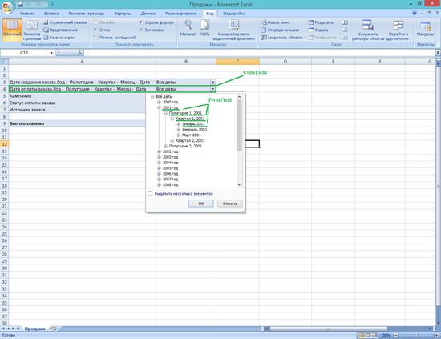
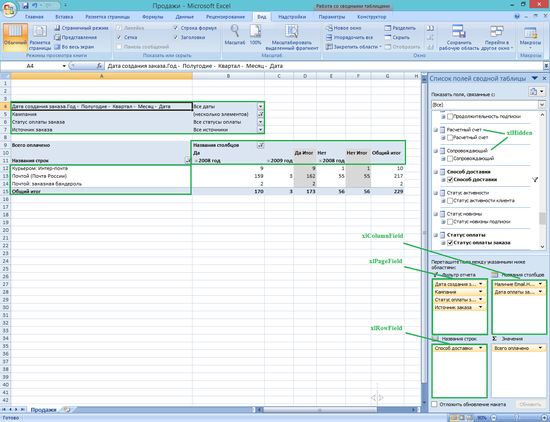

Макросы для OLAP-кубов
OLAP-кубы – очень удобное и распространенное средство получения и обработки данных. Однако и с ними работа может занимать достаточно много времени, чтобы вывести из себя любого даже самого спокойного человека. Написание макросов для выставления наиболее распространенных фильтров, для «копирования» фильтра и многое другое – вот что может спасти нас от рутины на работе.
Оговоримся сразу, что сводные таблицы вообще и OLAP-кубы в частности крайне привередливые, и макрос, который работал вчера, сегодня может перестать работать. Поэтому будьте внимательны и осторожны.
Из чего состоит OLAP-куб?

Фильтры в VBA называются CubeField, поля фильтров – PivotField. CubeFieldможет быть видимым и располагаться в одной из трех областей куба, а может быть спрятанным, то есть не использоваться. Это определяется через свойство Orientation. Например, для помещения фильтра в строки, нужно набрать:
CubeFields(“имя фильтра”).Orientation = xlRowField
На рисунке ниже показано, как называются различные области куба. Orientation можно задать и числом:
xlRowField=1
xlColumnField=2
xlPageField=3
xlHidden=4

Мы можем поместить несколько фильтров в строки, тогда для задания порядка их следования используется свойство Position, например:
CubeFields(“имя фильтра”).Position=2
После того, как мы расставили все фильтры по своим местам, мы начинаем расставлять значения фильтра. Тут нам в первую очередь пригодятся следующее свойство объекта CubeField:
.EnableMultiplePageItems – true/false, разрешить или запретить множественный выбор
и команда
.ClearManualFilter – очистить все выставленные ранее фильтры. Это действие нужно выставлять каждый раз перед выставлением нового набора «галочек», иначе получится чудесная смесь, либо не получится вообще ничего.
Далее нужно собственно выставить значения фильтра. То, что в нашем понимании – значение фильтра, в понимании VBA – набор значений различных полей фильтра. Например, CubeField «Дата оплаты» может содержать поле «Год оплаты», поле «Полугодие оплаты» и т.д. Массив значений фильтра присваивается конкретному PivotField при помощи свойства VisibleItemsList, например
ActiveSheet.PivotTables(1).PivotFields(“имя поля”).VisibleItemsList =my_array
или
Sheets(”куда”).PivotTables(1).PivotFields(“имя поля”).VisibleItemsList = Sheets(”откуда”).PivotTables(1).PivotFields(“имя поля”).VisibleItemsList
Не забудьте определить массив:
Dim my_array(1 To 200) As String
Кроме фильтров в OLAP есть еще меры, они помещаются в поле DataField. Это поле тоже имеет различные атрибуты. Например, для куба выше имеем:
PivotTables(1).DataFields(1).Caption="Всего оплачено"
На этом основные понятия заканчиваются. Дальнейшее исследование макросов для OLAP-кубов лучше проводить на конкретных примерах.
Поместить куб в верхний правый угол экрана, или "Изменять ли этот куб?"
Работа с кубами через VBA - дело непростое и зачастую не все процессы можно или нужно автоматизировать. Мы уже говорили о переборе всех сводных таблиц, но что делать, если нам нужны изменения не во всех, а только в некоторых? Можно записать условие, но что если условие писать долго и нет надобности делать это ради одного раза? Может быть лучше указывать макросу самостоятельно, какие кубы менять, а какие нет?
Ниже приведен пример макроса. который спрашивает, нужно ли менять конкретный куб. Чтобы пользователь понимал, о каком конкретно кубе его сейчас спрашивают, мы передвигаем этот куб в верхний правый угол экрана
For Each pvt In ActiveSheet.PivotTables
' помещаем курсор на текущую таблицу
pvt.PivotSelect "", xlFirstRow, True
' скролим лист
ActiveWindow.ScrollRow = Selection.Row
ActiveWindow.ScrollColumn = Selection.Column
' спрашиваем пользователя, нужно ли изменять этот куб
this_pvt = MsgBox("Изменять этот куб?", vbYesNo, "")
' если человек говорит да, изменять
If this_pvt = vbYes Then
' изменяем куб так, как нам нужно
......
End If
Next pvt